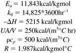
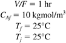

Additional Exercises
| 1: | Perform a search on propylene glycol. What is the worldwide demand? What is the current sales price? Enumerate some of the uses of this product. | | 2: | Consider the simple CSTR model used in Section M8.4. Transfer functions for the 100-ft3 and 5000-gallon reactor were given.
Find the heat transfer area, diameter, and UA for a 1000-ft3 reactor (with an operating volume of 850 ft3), designed with the same residence time and height/diameter ratio as the other reactors. Also, find the required jacket temperature to achieve the reactor temperature of 101.1°F. Find the state space model and calculate the eigenvalues for the 1000-ft3 reactor. Find the transfer function and calculate the poles. You should find that this reactor is open-loop unstable. Now, find the range of proportional gains that will yield a stable closed-loop system under proportional-only control.
| | 3: | Consider the propylene glycol example
For a desired propylene oxide conversion of 50% at a residence time of 0.25 hr, show that the reactor operating temperature is 101.1°F. For a desired propylene oxide conversion of 50% and a feed concentration of 0.132 lbmol/ft3, find the production rate of propylene glycol for two different feed flow rates: (i) 340 ft3//hr, and (ii) 2000 ft3/hr. Assume that the plant operates for 8400 hours/year. If propylene glycol sells for $0.70/lb, what are the expected annual revenues (before operating costs are considered) for each flowrate? Assume complete liquid coverage of the heat transfer area when the reactor is 75% full. What is the heat transfer area for a 100-ft3 reactor? Remember to include both the "bottom" and "side" of the reactor. Again, assume complete liquid coverage of the heat transfer area when the reactor is 75% full. What is the heat transfer area for a 5000-gallon (668 ft3) reactor? Remember to include both the "bottom" and "side" of the reactor. Comment on the A/V ratio as the volume of a reactor increases. For a specified reactor conversion (and temperature) and residence time, how does the jacket temperature change as a function of reactor volume?
| | 4: | Propylene glycol example, closed-loop behavior.
Perform the following for both the 100-ft3 and 5000-gallon (668 ft3) reactors.
For a PI controller, with an integral time of 1 hour, find the range of controller gains for closed-loop stability using the Routh stability criterion. Develop a SIMULINK block diagram to perform closed-loop simulations for the two reactor sizes. For simplicity, use the linear process transfer functions to represent the reactor. Include two additional first-order transfer functions with time constants of 0.1 hour (6 minutes) to account for unmodeled mixing and jacket dynamics. Select tuning parameters within the range of those that you obtained in part a. Adjust the parameters until you are satisfied with closed-loop response to a step setpoint change.
Make plots of both the reactor temperature response and the manipulated jacket temperature. | | 5: | Consider the following CSTR parameters

Assume that the reactor is to be operated with the following steady-state inputs:

Solve for the steady-state concentration and temperature and find the corresponding state space model. |
|